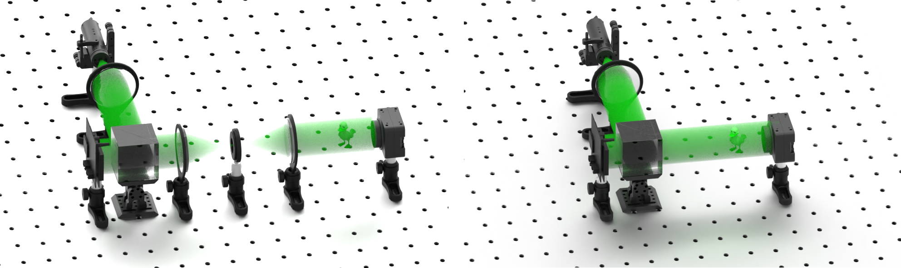

Compact Computational Holographic Display (Invited Article)
Ni Chen, Congli Wang, Wolfgang Heidrich
Frontiers in Photonics 3 (835962)

Holographic display with (left) and without (right) 4f system.
Abstract
Holographic display is an ultimate three-dimensional (3D) display technique that can produce the wavefront of 3D objects. The dynamic holographic display usually requires a spatial light modulator (SLM) with a following 4f system to eliminate the unnecessary orders produced by the grating structure of the SLM. We present a technique that displays the images without the 4f system. We detect the unnecessary wavefield by phase-shifting holography and suppress it using computational optimization. Experimental results are presented to verify the proposed method.
Resources
Paper [Chen2022Frontiers.pdf]